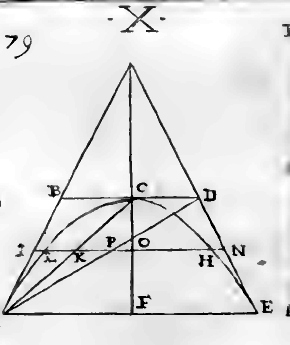

Propositio XII · Theorema XII¶


PROP. XII. THEOR. XII. (tab. 10. fig. 79, pp. 76–77)
Si coni frustum intra duo parallela plana interceptum comprehendat conoidis hyperbolici portionem, ita vt vtraque solida in eadem basi consistant, atque secundùm huius basis circumferentiam se mutuo contingant, portio conoidis aequalis erit coni frusto, dempto ex eo cono illo, cuius altitudo est communis portioni, basis verò communis est circulus.
Circa eundem axem CF intelligantur portio conoidis hyperbolici, & frustum coni, sintque eorum figurae genitrices ACE hyperbole, & ABDE trapetium, ita vt duo latera AB, DE contingant hyperbolam in punctis A, E; latusque BD parallelum ipsi AE in puncto C; iunctis deinde lineis AC, AD concipiamus conum, cuius triangulum per axem AC sit BAD. Dico conoidis portionem ACE aequalem esse coni frusto ABDE, dempto ex eo cono BAD.
Sumatur in axe CF quodlibet punctum O, perque illud agatur planum basi AE parallelum, quo plano secentur tria illa, concepta solida, sectiones autem sint circuli IN, LH, IP.
(in marg. 16. tertij conic.) Quoniam, vt quadratum contingentis CB ad id contingentis BA, ita est rectangulum HIL ad quadratum IA, erit permutando quadratum BC ad rectangulum HIL, vt quadratum BA ad ipsum AI, vel, vt quadratum BC ad ipsum IK, quadratum igitur BC ad rectangulum HIL eandem habet rationem, quam ad quadratum IK; & propterea quadratum IK aequabitur rectangulo HIL. verùm (in marg. 6. secundi.) rectangulum HIL, vnà cum quadrato LO aequale est quadrato IO; quadratum igitur IO aequale erit duobus quadratis LO, IK simul sumptis; quare etiam circulus IN, cuius radius IO aequalis erit duobus circulis IP, LH, quorum radij IL, LO.
f. 0094 · p. 77Iam assumpta eadem regula AE circuli omnes AE, IN, BD &c. frusti coni ABDE aequales sunt omnibus circulis AE, LH &c. conoidis portionis, vnà cum omnibus circulis IP, BD &c. coni BAD; ex quo sequitur, quod portio conoidis hyperbolici ACE, vnà cum cono BAD aequalis sit frusto ABDE, & dempto communiter cono BAD, erit conoidis portio ACE aequalis frusto ABDE, dempto ex eo cono BAD, quod &c.